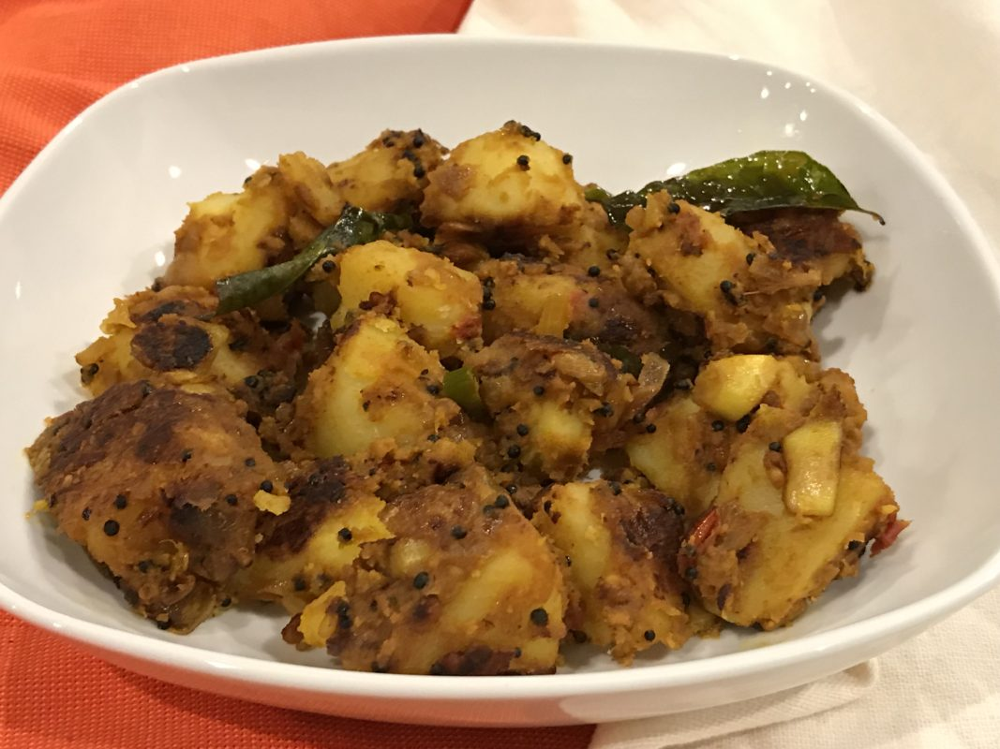

Potato Fry

Description
Potato fry is a classic side dish that goes well with nearly anything. Packed full of taste and spice, it is best eaten with
classic south Indian dishes such as Rasam rice and curd rice, though it is amazing as an accompaniment to north Indian dishes
such a jeera rice, pulao, and rotis as well.
Requiring very few ingredients, this is a must-try for anyone craving a yummy side dish!
Ingredients
- Potatoes, peeled, boiled and diced - 4 medium
- [Optional] Onion, sliced - 1 large
- Oil - 2 tbsp
- Mustard seeds - 0.5 tsp
- Urad dal - 0.5 tsp
- Turmeric powder - 0.5 tsp
- [Optional] Cumin seeds - 0.5 tsp
- Hing - a pinch
- Salt - 1 tsp, adjust to taste
- Red chilli powder - 1.5 tsp, adjust to taste
Steps
- Heat oil in a pan. Add mustard seeds, urad dal, turmeric powder, and cumin seeds.
- When the seeds start to burst, add a pinch of hing. If using onion, add now and saute until transluscent.
- Add the chopped potatoes and saute for a couple of minutes.
- Add salt and red chilli powder. Saute until potatoes turn golden brown.
Back to Home